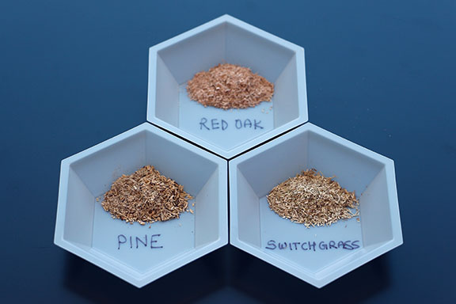
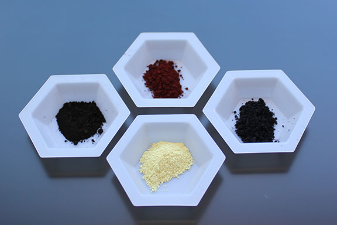
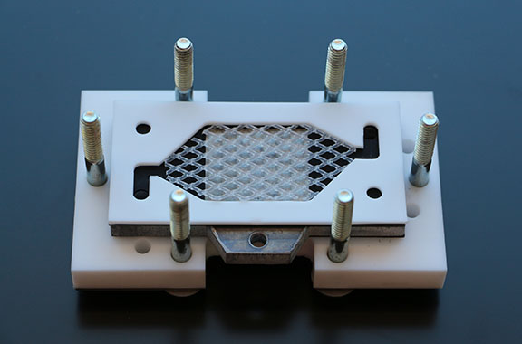
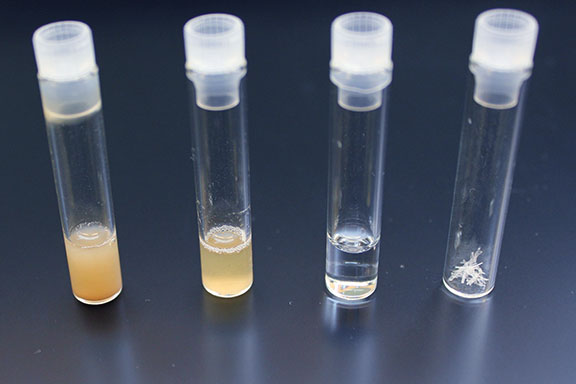
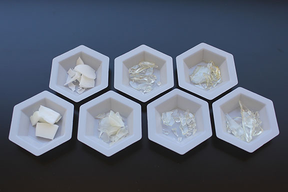

Research
Sustainable Carbon Transformations for a Greener Chemical Industry
Our vision is to foster a sustainable and decarbonized chemical manufacturing industry, harnessing plant biomass and renewable energy, through innovations in biomass utilization, catalyst design, electrosynthesis, advanced manufacturing, and performance materials.

Biomass
Biomass is an abundant source of renewable carbon that has the potential to replace fossil resources as a raw material for chemical manufacturing. Research has already unlocked the conversion of cellulosic sugars to large-volume and low-cost commodity and specialty chemicals. However, the valorization of plants' lignin fraction remains hampered by its intrinsic heterogeneity and recalcitrant nature. New technologies must be developed to facilitate its recovery and use as a feedstock for chemical manufacturing.
Our Research
Our group has discovered a pretreatment strategy that enhances the deconstruction of lignin—while minimizing carbon loss due to char formation—and aids the formation of valuable olefins and aromatic compounds during subsequent upgrading. Our strategy doubles the production of desired hydrocarbons compared to conventional lignin upgrading methods and supplies a pulp enriched in sugars three times more amenable to enzymatic hydrolysis, a key step for producing cellulosic biofuels.
Catalyst Design
Catalysis is key to the chemical industry as it enhances the rate of desired transformations, therefore facilitating the formation of desired products while minimizing waste. Researchers continuously improve catalysts by tailoring their structure and elemental composition. One design strategy consists in dispersing the active material—like metal nanoparticles—on a porous support. However, conventional oxide supports developed for petrochemical reactions undergo hydrolytic attacks and irreversibly degrade in water, which is the green solvent of choice for the thermo- and electrocatalytic conversion of biomass. New materials that overcome this limitation are needed.
Our Research
Our group designs carbon materials tailored for modern reactions in aqueous acidic and alkaline environments. In addition to replacing conventional oxides, our objective is to manipulate the atomic-level structure and surface chemistry of carbons to enhance the catalyst's performance. For example, we have demonstrated that rate and selectivity can be boosted for Pd/C through electronic metal-support interactions (EMSI) using surface functionalization to tune the work function of the carbon support.


Electrosynthesis
The electrification of chemical transformations is emerging as the next frontier in chemical manufacturing. In contrast to conventional reactions that are governed by temperature, electrochemical transformations are also driven by electrode potential. This potential can be tuned to alter the energetics of the involved species and open new reaction pathways. The opportunities are unlimited: challenging reactions proceed at room temperature, reductive and oxidative transformations can be coupled to achieve energy-neutral processes, new chemical intermediates and products become accessible. This technology also enables the emergence of a sustainable chemical industry that converts a renewable raw material, biomass, using renewable wind and solar energy.
Our Research
Our group aims to advance the bioeconomy through transformations that give access to commodity chemicals and novel products with bio-enabled performance advantages. Many of our efforts focus on hybrid microbial electrosynthesis (HMES), an approach that combines the power of biocatalysis with the advantages of electrosynthesis to produce renewable monomers from biomass. For example, we work on the electrochemical hydrogenation of biologically-produced muconic acid to 3-hexenedioic acid and adipic acid, a Nylon monomer.
Advanced Manufacturing
Present efforts to decarbonize the chemical industry and improve its sustainability focus on replacing fossil fuels as a raw material and energy source. While important, this direct replacement strategy does not capture the specificity of biomass and the many opportunities this feedstock has to offer. One key advantage of biomass over fossil hydrocarbons is the possibility of using biocatalysis—fermentation—and the power of microbial cell factories for manufacturing products that are technically and economically challenging to access using conventional chemical catalysis. These products, including novel molecules, will enable innovations in biodegradable plastics and performance materials.
Our Research
Our group works on the integration of biocatalysis and electrocatalysis for chemical manufacturing. We are especially interested in process intensification strategies that minimize the use of water and energy, and that facilitate downstream separations. We also address critical challenges in modern electrosynthesis such as the corrosion of electrode materials.


Performance Materials
Innovations in most sectors—communications, transportation, energy production and storage, home goods—are driven by progress in materials synthesis. However, few revolutionary materials have been commercialized over the past decade, and in most cases improvements come from changes in additives and formulation. Additives like dispersing agents, emulsifiers, defoamers, and corrosion inhibitors are common in paints and coatings. Plastics often contain antioxidants, antistatic agents, thermal stabilizers, flame retardants, and additives that improve their water and air barrier properties. Because additives are introduced through physical mixing, they may leach over time, causing the degradation of the material and adverse effects on humans and the environment.
Our Research
Our research on electrosynthesis and advanced manufacturing enabled the production of novel functional monomers that can be introduced in polyamides like Nylon 6,6 through co-polymerization. Specifically, we leveraged the unsaturations in muconic acid and 3-hexenedioic acid to tether desired moieties that elevate the parent polyamide by affording properties like hydrophobicity and flame retardancy. We showed that target properties are already achieved at 5% replacement, offering a technically, economically, and environmentally advantageous solution to replace common additives.